A1 · all dishes · RRR (relative to total purchases) · pre/post, equal windows
A1, all dishes: each outcome's daily purchases relative to total purchases (RRR) at each launch, level only, with the simple pre/post comparison under each estimate.
The restaurant this study is about. Two launches: Chicken roll (29 Apr 2026, vegan pulled chicken) and Dragon wrap (5 Jun 2026, dragon wrap abbots). Its data first, then its results, from the joint models (both launches in one model). A2 is the customer model fitted at the day level, as testing published it: each customer's orders less their mean before the first launch, averaged over each day, all 16 fits converged.
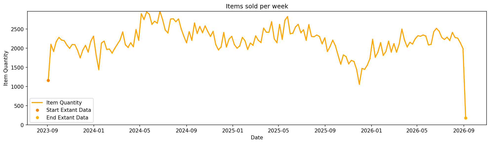
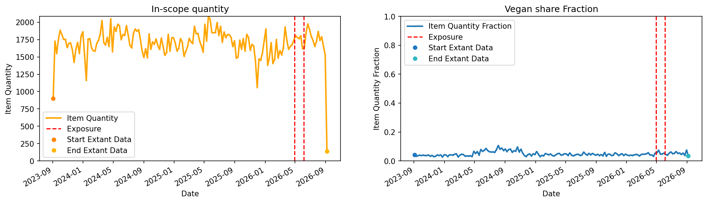
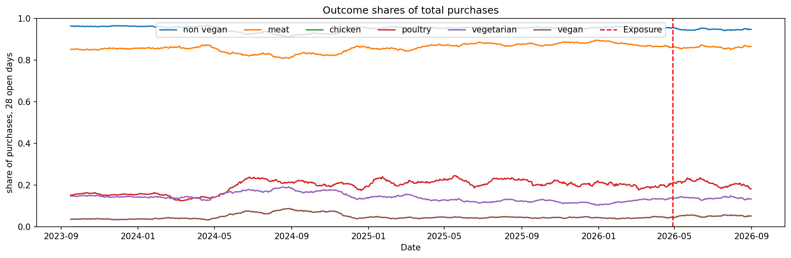
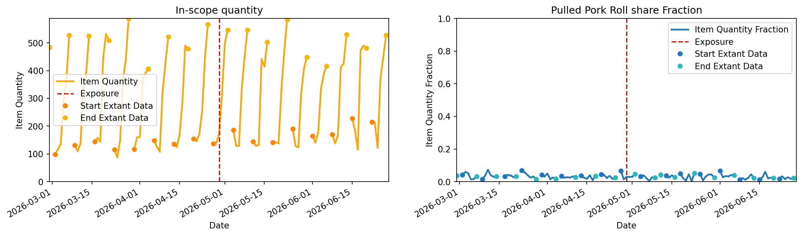
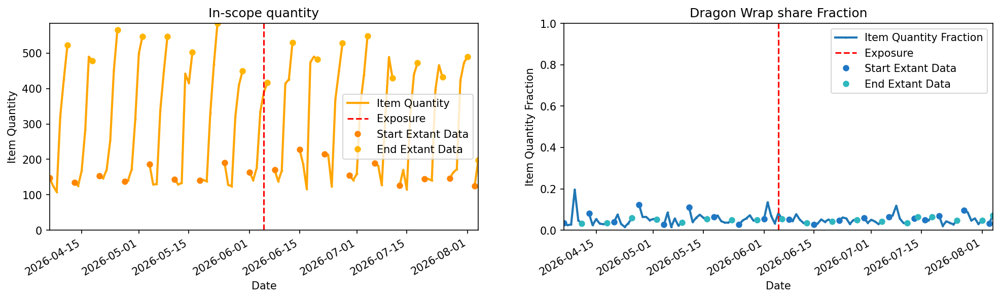
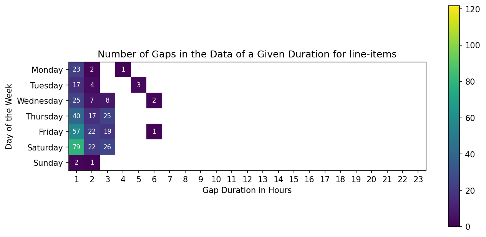
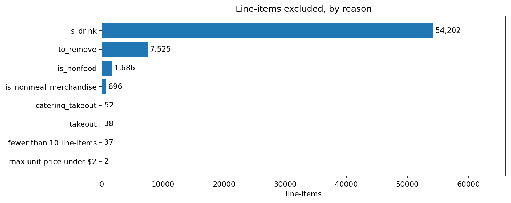
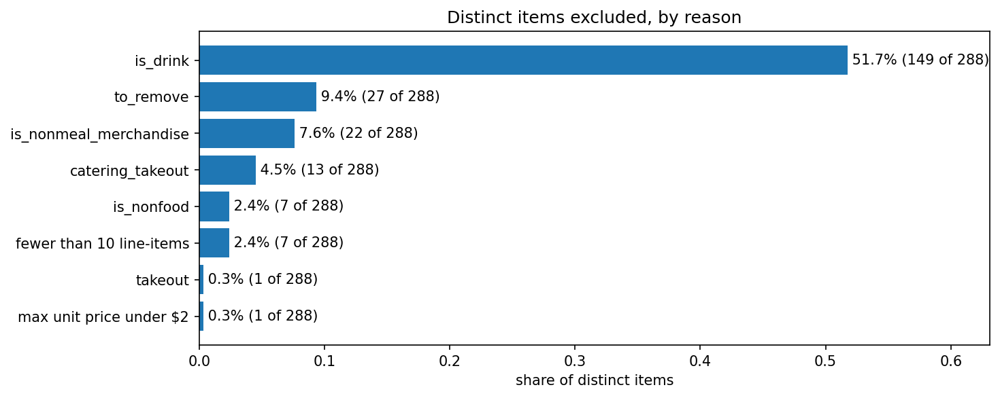
After the last stage: everything still in scope.
| item_name | rows | share |
|---|---|---|
| Lunch Special | 28,090 | 11.3% |
| Block Burger | 26,317 | 10.6% |
| Croque Garcon Burger | 15,117 | 6.1% |
| Poutine Burrito | 13,445 | 5.4% |
| Dragon Wrap | 11,265 | 4.5% |
| Rangoon Fries | 11,027 | 4.4% |
| Chicken Bacon Ranch | 9,749 | 3.9% |
| Duck Duck Goose Fries | 9,430 | 3.8% |
| Pulled Pork Roll | 8,208 | 3.3% |
| Bacon & Brie A La Emily | 7,978 | 3.2% |
| Poutine | 7,778 | 3.1% |
| Sloppy Nick | 7,621 | 3.1% |
| Grilled Cheese | 7,353 | 2.9% |
| PCF Fried Chicken Thighs | 7,315 | 2.9% |
| Omaha Fries | 6,712 | 2.7% |
| Frenchie | 6,594 | 2.6% |
| Dragon Fries | 6,312 | 2.5% |
| Funk Fungi Fries | 5,458 | 2.2% |
| Fries | 5,172 | 2.1% |
| Dinner Special | 4,857 | 1.9% |
| B16 House Salad | 4,384 | 1.8% |
| Tribute Burger | 3,996 | 1.6% |
| Bittersweet Dessert Bars - Small Dessert | 3,500 | 1.4% |
| French Onion Smash Burger | 3,355 | 1.3% |
| Happiness Burger | 3,327 | 1.3% |
| Soup | 3,299 | 1.3% |
| Sailor Dip | 2,556 | 1.0% |
| Shroomy | 2,427 | 1.0% |
| Sweet Potato Fries | 1,949 | 0.8% |
| Renegade Chickenwich | 1,772 | 0.7% |
| Sailor Burger | 1,686 | 0.7% |
| Birria-ish Wich | 1,569 | 0.6% |
| Side Salad | 1,503 | 0.6% |
| Bourdainwich | 1,296 | 0.5% |
| Patty Melt | 1,131 | 0.5% |
| Chicken Tenders | 1,002 | 0.4% |
| Birria Fries | 913 | 0.4% |
| Pal-onator | 871 | 0.3% |
| El Guapo | 735 | 0.3% |
| Guajillo Pork Fries | 316 | 0.1% |
| Pal-mento | 271 | 0.1% |
| Sugar Makery “Block Pop” | 265 | 0.1% |
| Emily's Perfect Pear | 237 | 0.1% |
| The Chocolate's Bar - Small Dessert | 178 | 0.1% |
| Chips | 155 | 0.1% |
| The Frenchie Fun Fries | 142 | 0.1% |
| Belgian Smash² Burger | 111 | 0.0% |
| Philly | 102 | 0.0% |
| Wings | 63 | 0.0% |
| The Jeffrey | 62 | 0.0% |
| Lobster Bisque | 54 | 0.0% |
| E & G Chickenwhich | 51 | 0.0% |
| Dufrense Salad | 50 | 0.0% |
| Lobster Grilled Cheese Combo | 47 | 0.0% |
| The Belgian Dip | 45 | 0.0% |
| $5 Poutine | 43 | 0.0% |
| Oxtail Quesadilla | 35 | 0.0% |
| Vegan Pulled Chicken | 29 | 0.0% |
| Sugar Makery Popcorn Balls | 21 | 0.0% |
| Happy Hour Food And Specials | 18 | 0.0% |
| Cucumber Salad | 15 | 0.0% |
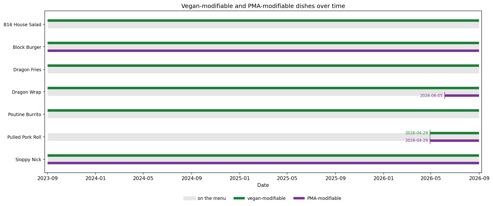
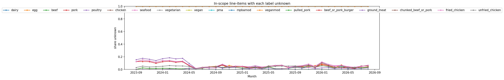
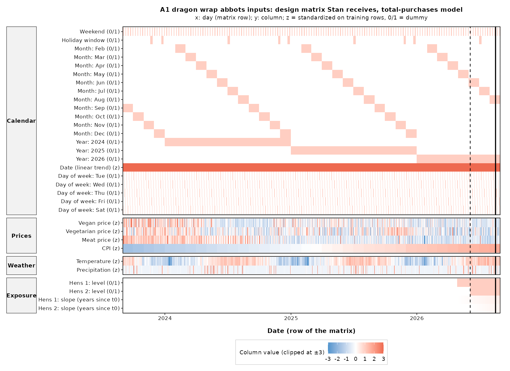
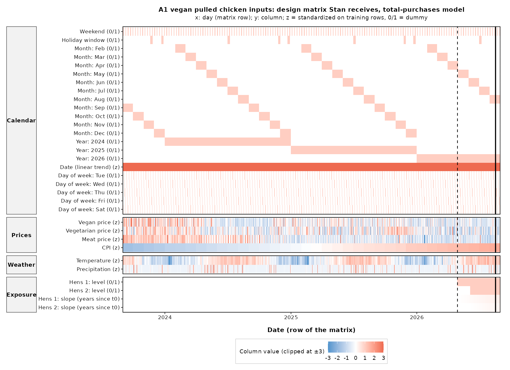
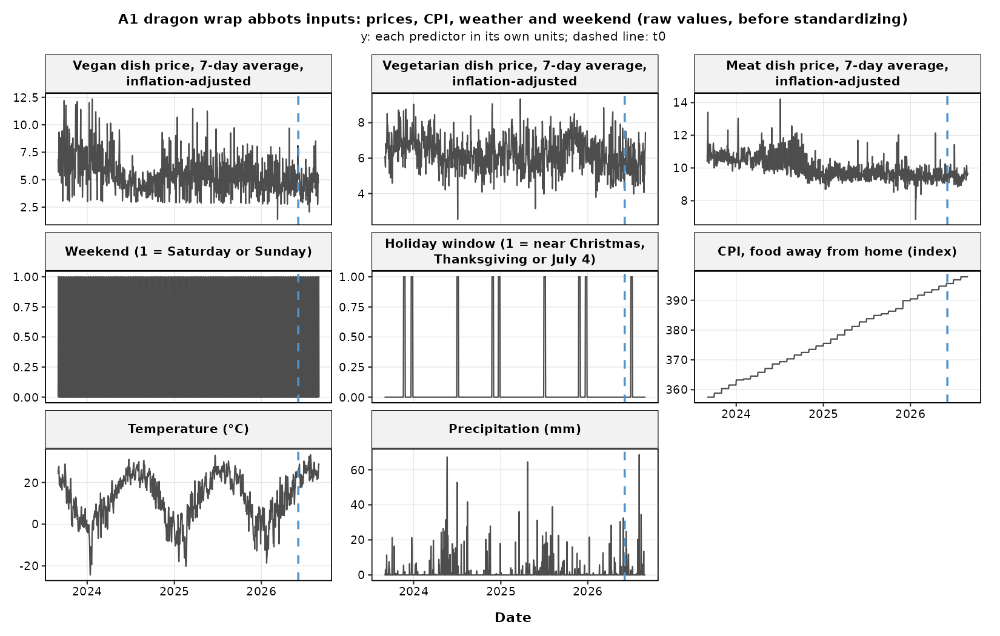
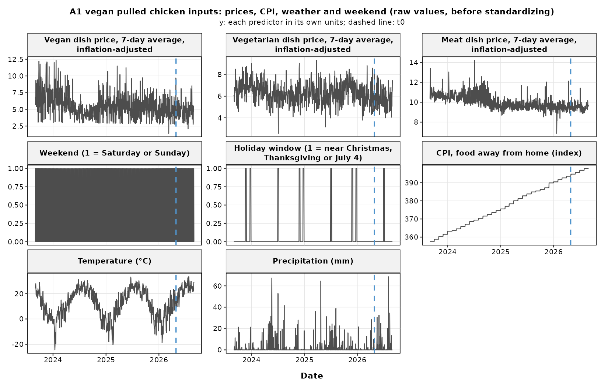
table 1
| set | what it tests | model | exposures | outcomes | dish sets | models to fit | exposure estimates |
|---|---|---|---|---|---|---|---|
| A1 | ITS of PMA modification introductions | ingarch multilevel |
|
|
| 24 | 48 |
| A2 | ITS of PMA modification introductions, fixed customer base | customer multilevel |
|
|
| 24 | 48 |
The main results: each outcome against total purchases, so a shift between outcomes rather than a change in how much was sold. Top row all dishes, with the simple pre/post comparison; bottom row entrees. A1 counts daily purchases; A2 is the customer model, on the additive scale, so its tiles are in items per order rather than ratios. Expand a tile with its button (Escape closes it); click a point for that fit's prediction figure, or a pre/post diamond for the same figure with the prediction replaced by the pre/post averages. The buttons download each figure as a PDF. Marked rows: † marks the fits with divergent transitions: A1 entrees target (Chicken roll) (1), A1 entrees vegan (47, kept as fitted by decision). Each black diamond is a simple before/after comparison with no model, on level rows only: the average over the open days (A1) or days (A2, the day-level model: each day's orders averaged, as that model fits them) after an introduction against the average before it, from the rows the fit trained on and on the scale of the tile it sits in. Its black bar is one standard error either side and its grey bar the 95% t interval, with Welch-Satterthwaite degrees of freedom, drawn just under the model's own estimate on the same row. A1 is the ratio of the two average daily counts, its standard error the delta method's on the log scale; A2 is Welch's two-sample t test on those daily averages. Against total purchases (A1 RRR, A2 difference), the outcome's comparison and total's are combined as independent, as the model's contrast takes its two fits. Windows (equal: as many days before as after, neither crossing the other introduction): Chicken roll, 23 Mar 2026 to 28 Apr 2026 against 29 Apr 2026 to 4 Jun 2026; Dragon wrap, A1 29 Apr 2026 to 4 Jun 2026 against 5 Jun 2026 to 11 Jul 2026, A2 3 May 2026 to 4 Jun 2026 against 5 Jun 2026 to 7 Jul 2026.
A1, all dishes: each outcome's daily purchases relative to total purchases (RRR) at each launch, level only, with the simple pre/post comparison under each estimate.
A2, all dishes: each outcome's change in items per order relative to total purchases at each launch, level only, with the simple pre/post comparison under each estimate.
A1, entrees: each outcome's daily purchases relative to total purchases (RRR) at each launch, level only.
A2, entrees: each outcome's change in items per order relative to total purchases at each launch, level only.
Supplementary: each outcome's own effect, not taken against total purchases. Top row all dishes, with the simple pre/post comparison (the diamonds, as in the RRR section, on each outcome's own scale); bottom row entrees. Expand a tile with its button (Escape closes it); click a point for that fit's prediction figure, or a pre/post diamond for the same figure with the prediction replaced by the pre/post averages. The buttons download each figure as a PDF.
A1, all dishes: each outcome's own rate ratio (RR) at each launch, level only, with the simple pre/post comparison under each estimate.
A2, all dishes: each outcome's own change in items per order at each launch, level only, with the simple pre/post comparison under each estimate.
A1, entrees: each outcome's own rate ratio (RR) at each launch, level only.
A2, entrees: each outcome's own change in items per order at each launch, level only.
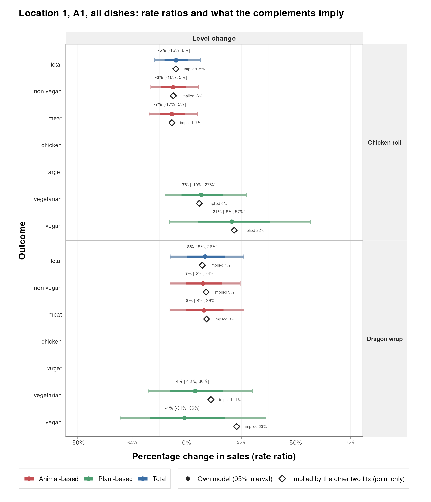
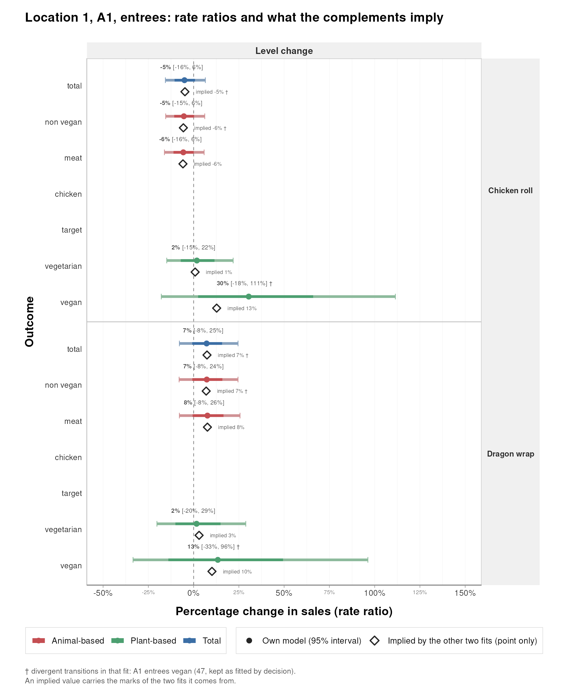
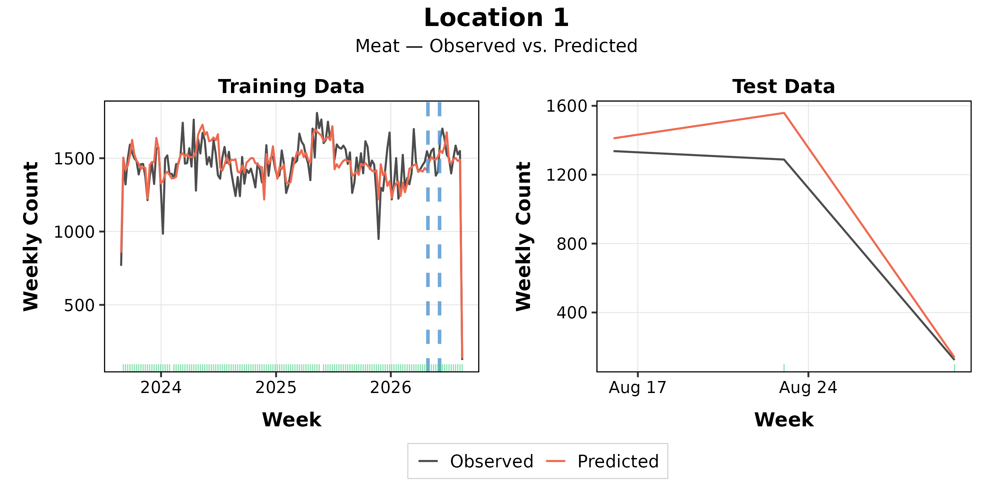
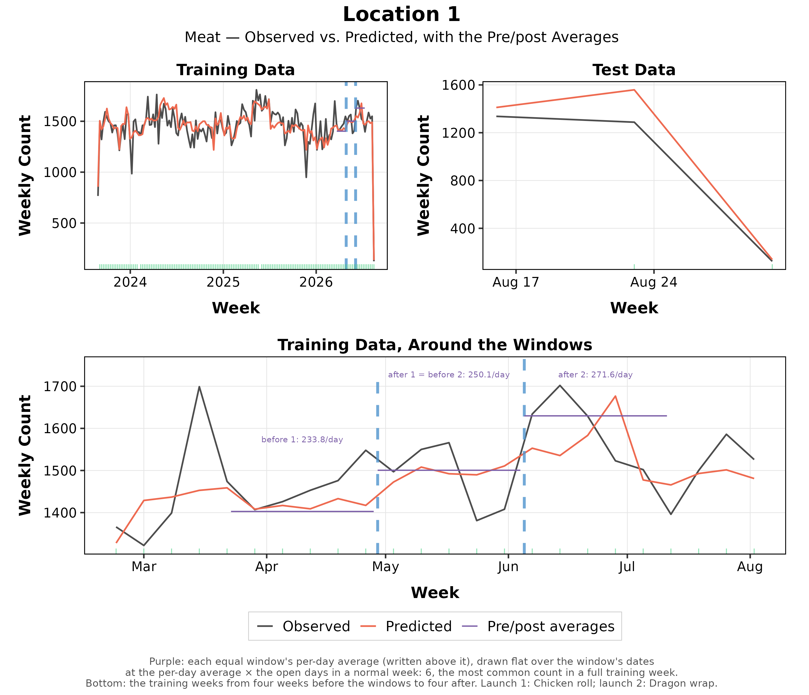
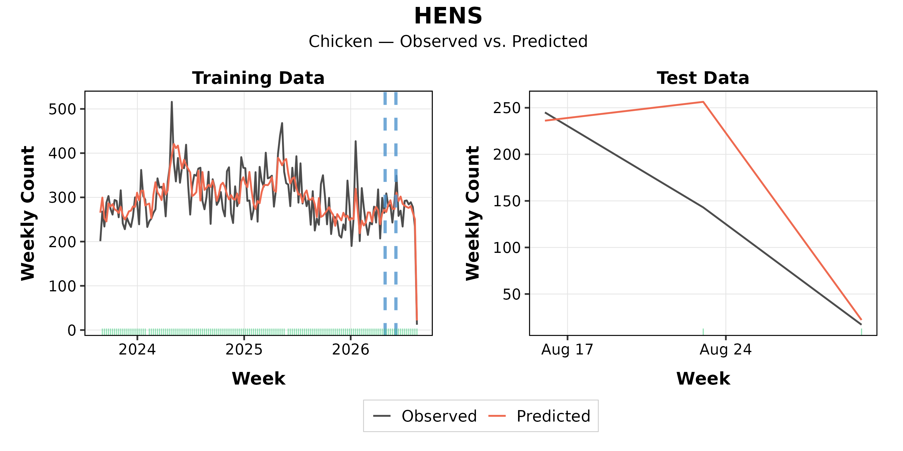
A second restaurant, analysed with the same pipeline and the same rules, so its figures are the same set as location 1's. One launch: Black Sheep (18 Oct 2021). A1 only: its sales carry no customer ids, so there is no customer model (A2) and no A1 and A2 figure.
The main results: each outcome against total purchases, so a shift between outcomes rather than a change in how much was sold. Top row all dishes, with the simple pre/post comparison; bottom row entrees. Expand a tile with its button (Escape closes it); click a point for that fit's prediction figure, or a pre/post diamond for the same figure with the prediction replaced by the pre/post averages. The buttons download each figure as a PDF. Marked rows: ‡ marks a fit of borderline convergence: A1 entrees total (max R-hat 1.0103 against the rule of below 1.01, 0 divergent transitions, bulk ESS 592); every row taken against total purchases in that dish set divides by it and carries the mark too. Each black diamond is a simple before/after comparison with no model, on level rows only: the average over the open days (A1) after an introduction against the average before it, from the rows the fit trained on and on the scale of the tile it sits in. Its black bar is one standard error either side and its grey bar the 95% t interval, with Welch-Satterthwaite degrees of freedom, drawn just under the model's own estimate on the same row. A1 is the ratio of the two average daily counts, its standard error the delta method's on the log scale. Against total purchases (the RRR), the outcome's comparison and total's are combined as independent, as the model's contrast takes its two fits. Windows (equal: as many days before as after, neither crossing the other introduction): Black Sheep, 3 May 2021 to 17 Oct 2021 against 18 Oct 2021 to 3 Apr 2022.
A1, all dishes: each outcome's daily purchases relative to total purchases (RRR) at each launch, level only, with the simple pre/post comparison under each estimate.
A1, entrees: each outcome's daily purchases relative to total purchases (RRR) at each launch, level only.
Supplementary: each outcome's own effect, not taken against total purchases. Top row all dishes, with the simple pre/post comparison (the diamonds, as in the RRR section, on each outcome's own scale); bottom row entrees. Expand a tile with its button (Escape closes it); click a point for that fit's prediction figure, or a pre/post diamond for the same figure with the prediction replaced by the pre/post averages. The buttons download each figure as a PDF.
A1, all dishes: each outcome's own rate ratio (RR) at each launch, level only, with the simple pre/post comparison under each estimate.
A1, entrees: each outcome's own rate ratio (RR) at each launch, level only.
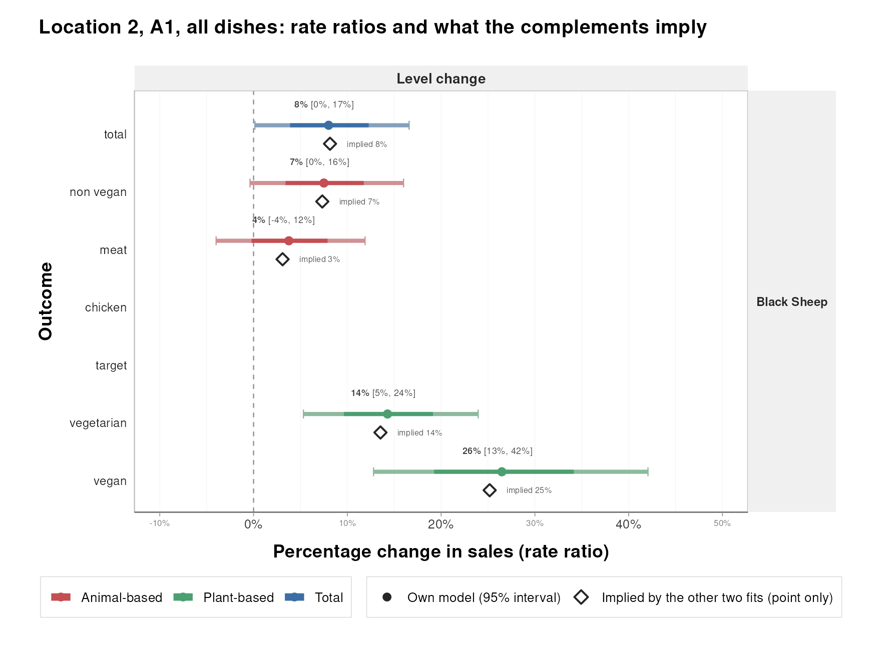
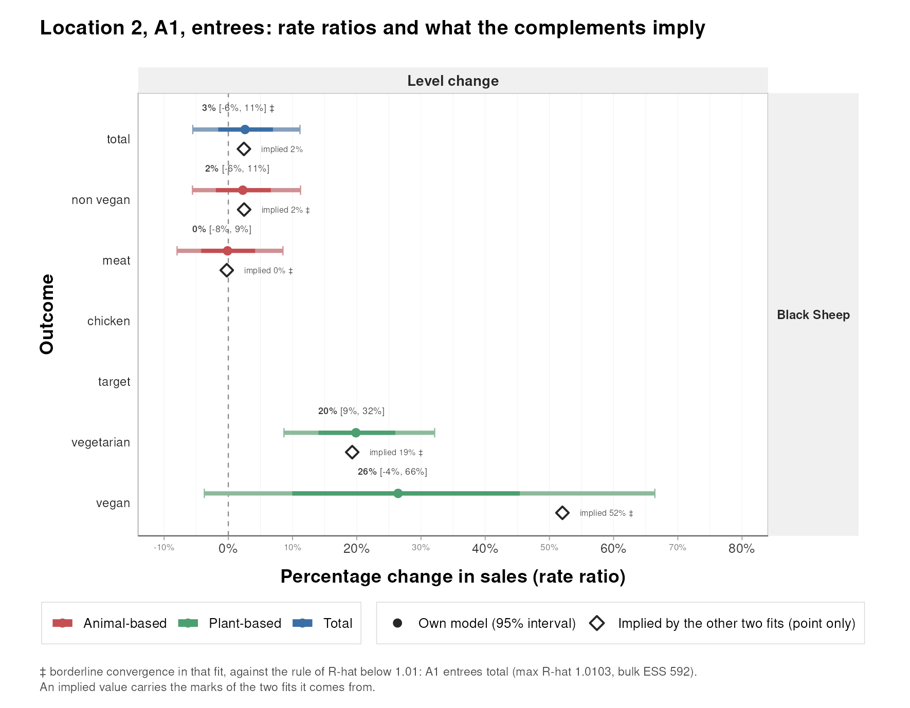
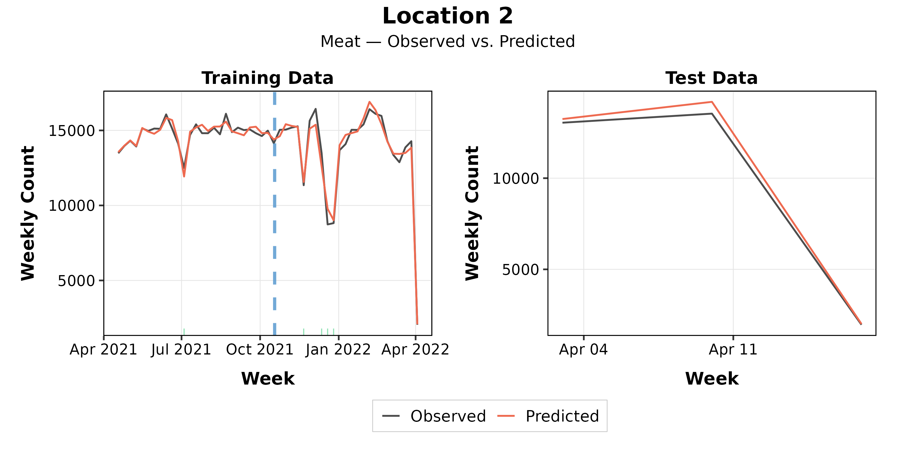
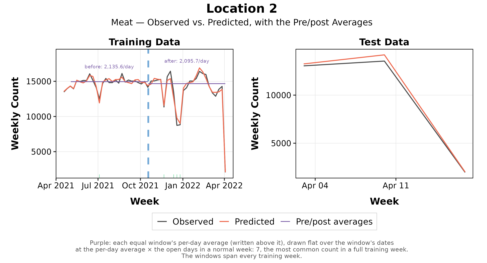
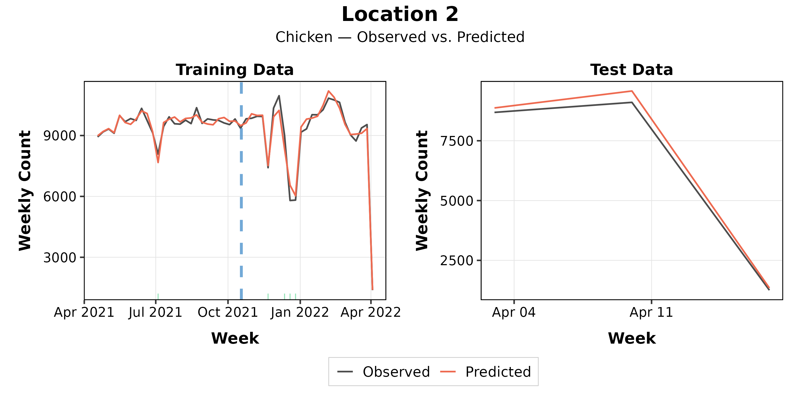